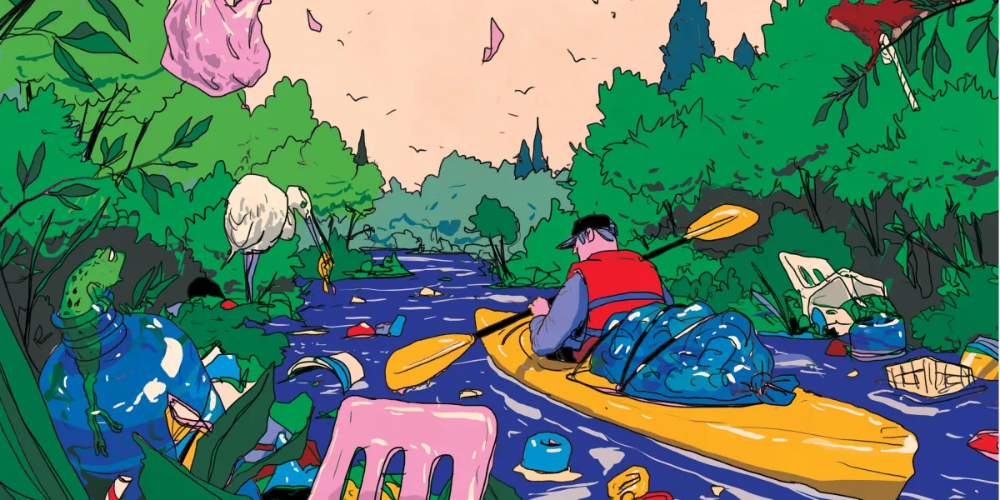
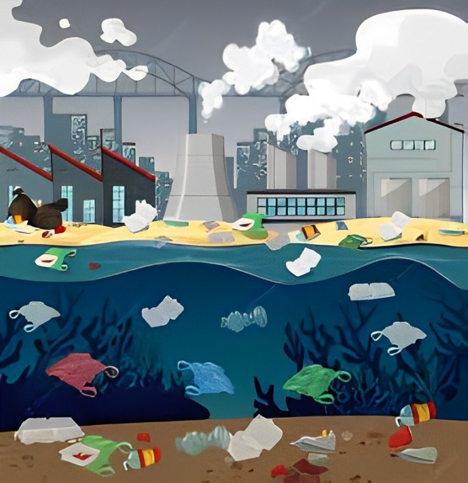
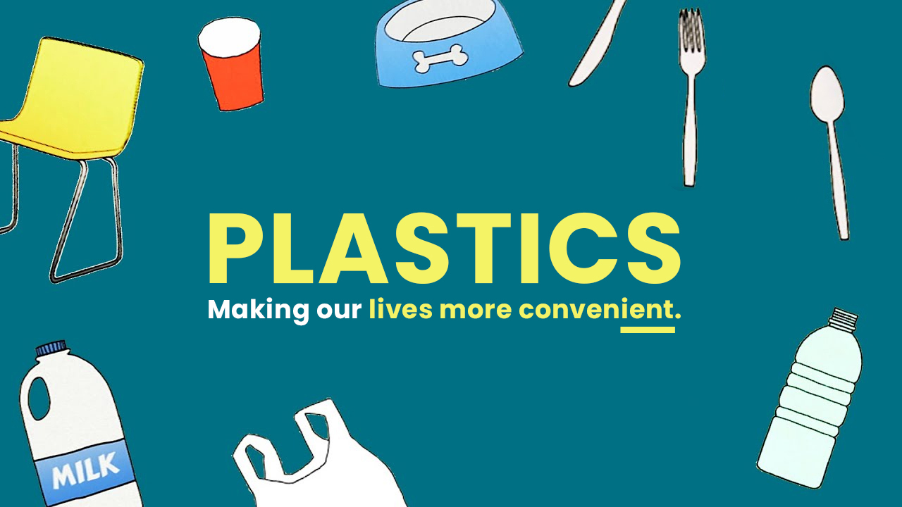

1. Overuse of Single-Use Plastics

Items like plastics bags,bottles,straws
and packaging are often used only
once and then discarded.
These account for a large percentage of
plastic waste leaking into oceans,rivers and landfills.
2. Improper Waste Management

Inadequate disposal systems in many areas lead to plastic waste leaking into oceans, river and landfills.
3.Plastic Production

Global plastic production has increased dramatically over the years, with many industries relying on plastics for packaging and products.The vast majority of this plastic is not recycled.